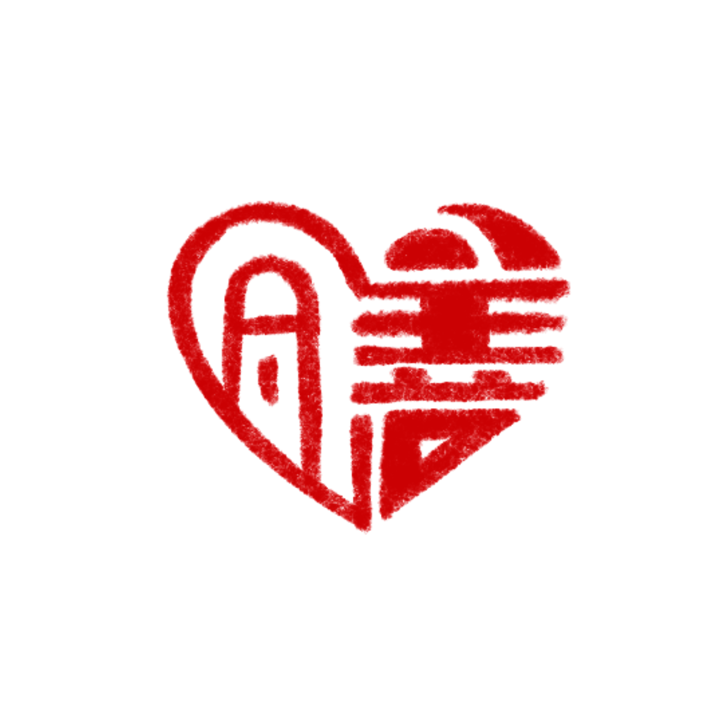

<!DOCTYPE html>
<html lang="zh-TW">
<head>
    <meta charset="UTF-8">
    <meta name="viewport" content="width=device-width, initial-scale=1.0, maximum-scale=1.0, user-scalable=no">
    <title>中醫體質自我檢測系統</title>
    <!-- Tailwind CSS -->
    <script src="https://cdn.tailwindcss.com"></script>
    <!-- React & ReactDOM -->
    <script src="https://unpkg.com/react@18/umd/react.production.min.js" crossorigin></script>
    <script src="https://unpkg.com/react-dom@18/umd/react-dom.production.min.js" crossorigin></script>
    <!-- Babel -->
    <script src="https://unpkg.com/@babel/standalone/babel.min.js"></script>
    <!-- Google Fonts -->
    <link href="https://fonts.googleapis.com/css2?family=Noto+Serif+TC:wght@400;600;700&family=Noto+Sans+TC:wght@300;400;500;600;700&display=swap" rel="stylesheet">
    <style>
        body {
            font-family: 'Noto Sans TC', -apple-system, BlinkMacSystemFont, "Segoe UI", Roboto, sans-serif;
            background-color: #FAF7F2;
            color: #2D3748;
            -webkit-tap-highlight-color: transparent;
            user-select: none;
        }
        .font-serif-tc {
            font-family: 'Noto Serif TC', serif;
        }
        .bg-tcm-green { background-color: #1A4331; }
        .text-tcm-green { color: #1A4331; }
        .border-tcm-green { border-color: #1A4331; }
        .bg-tcm-cream { background-color: #FAF7F2; }
        .shadow-tcm { box-shadow: 0 10px 25px -5px rgba(26, 67, 49, 0.08), 0 8px 10px -6px rgba(26, 67, 49, 0.04); }
        .custom-scrollbar::-webkit-scrollbar { width: 4px; }
        .custom-scrollbar::-webkit-scrollbar-track { background: #f1f1f1; border-radius: 4px; }
        .custom-scrollbar::-webkit-scrollbar-thumb { background: #cbd5e1; border-radius: 4px; }

        /* Responsive Mobile Web Container Layout */
        .app-container {
            width: 100%;
            max-width: 600px;
            min-height: 100vh;
            margin: 0 auto;
            background-color: #FAF7F2;
            display: flex;
            flex-direction: column;
            position: relative;
        }

        /* Stamp animation effect for redeem verification */
        @keyframes stamp-bounce {
            0% { transform: scale(3) rotate(-12deg); opacity: 0; }
            50% { transform: scale(0.9) rotate(-12deg); opacity: 0.8; }
            70% { transform: scale(1.05) rotate(-12deg); opacity: 1; }
            100% { transform: scale(1) rotate(-12deg); opacity: 1; }
        }
        .animate-stamp {
            animation: stamp-bounce 0.4s cubic-bezier(0.175, 0.885, 0.32, 1.275) forwards;
        }
    </style>
</head>
<body class="min-h-screen bg-[#FAF7F2]">
    <div id="root" class="w-full min-h-screen"></div>

    <script type="text/babel">
        const CONSTITUTION_DATA = {
            pinghe: {
                id: 'pinghe',
                name: '平和質',
                title: '陰陽氣血調和',
                tagline: '體態適中、臉色紅潤、精力充沛',
                color: '#1A4331',
                bgColor: 'bg-emerald-50',
                borderColor: 'border-emerald-500',
                textColor: 'text-emerald-800',
                features: {
                    main: '陰陽氣血調和，以體態適中、臉色紅潤、精力充沛等為主要特徵。',
                    body: '體形勻稱健壯。',
                    common: '臉色、膚色潤澤，頭髮稠密有光澤，目光有神，鼻色明潤，嗅覺通利，唇色紅潤，不易疲勞，精力充沛，耐受寒熱，胃納佳，睡眠良好，二便正常，舌淡紅，苔薄白，脈和緩有力。',
                    psychology: '性格隨和開朗。',
                    tendency: '平素患病較少。',
                    adaptation: '對自然環境和社會環境適應能力較強。'
                },
                advice: '維持規律作息，飲食均衡，適度運動。保持愉悅心情，避免過勞或過逸。'
            },
            qixu: {
                id: 'qixu',
                name: '氣虛質',
                title: '元氣不足',
                tagline: '疲乏、氣短、自汗、語言低弱',
                color: '#D97706',
                bgColor: 'bg-amber-50',
                borderColor: 'border-amber-500',
                textColor: 'text-amber-800',
                features: {
                    main: '元氣不足，以疲乏、氣短、自汗等為主要特徵。',
                    body: '肌肉鬆軟不實。',
                    common: '平素語音低弱，氣短懶言，容易疲乏，精神不振，易出汗，舌淡紅，舌邊有齒痕，脈弱。',
                    psychology: '性格內向，不喜冒險。',
                    tendency: '易患感冒、內臟下垂、肥胖、骨質疏鬆、老年便秘、慢性疲勞綜合徵、焦慮症等病；病後康復緩慢。',
                    adaptation: '不耐受風、寒、暑、濕、熱邪。'
                },
                advice: '宜食補氣健脾食物（如黃芪、黨參、山藥、大棗）。避免劇烈運動，宜進行太極拳、八段錦等平緩運動。'
            },
            yangxu: {
                id: 'yangxu',
                name: '陽虛質',
                title: '陽氣不足',
                tagline: '畏寒怕冷、手足不溫、喜熱飲食',
                color: '#DC2626',
                bgColor: 'bg-red-50',
                borderColor: 'border-red-500',
                textColor: 'text-red-800',
                features: {
                    main: '陽氣不足，以畏寒怕冷、手足不溫等虛寒表現為主要特徵。',
                    body: '肌肉鬆軟不實。',
                    common: '平素畏冷，手足不溫，喜熱飲食，精神不振，舌淡胖嫩，或舌邊有齒痕，脈沉遲。',
                    psychology: '性格多沉靜、內向。',
                    tendency: '易患痰飲、腫脹、洩瀉、骨質疏鬆、慢性疲勞綜合徵、原發性痛經、膝關節炎等病；感邪易從寒化。',
                    adaptation: '耐夏不耐冬；易感風、寒、濕邪。'
                },
                advice: '注意保暖，多曬太陽。宜食溫陽補腎食物（如羊肉、生薑、桂圓、韭菜）。少食生冷寒涼之物。'
            },
            yinxu: {
                id: 'yinxu',
                name: '陰虛質',
                title: '陰液虧少',
                tagline: '口燥咽乾、手足心熱、體形偏瘦',
                color: '#EA580C',
                bgColor: 'bg-orange-50',
                borderColor: 'border-orange-500',
                textColor: 'text-orange-800',
                features: {
                    main: '陰液虧少，以口燥咽乾、手足心熱等虛熱表現為主要特徵。',
                    body: '體形偏瘦。',
                    common: '手足心熱，眼睛乾澀，口燥咽乾，鼻微乾，喜冷飲，大便乾燥，舌紅少津，脈細數。',
                    psychology: '性格活潑，性情急躁，外向好動。',
                    tendency: '易患虛勞、遺精、不寐、骨質疏鬆症、糖尿病、高血壓、偏頭痛、功能性便秘、肌少症、乾眼症等病；感邪易從熱化。',
                    adaptation: '耐冬不耐夏；不耐受暑、熱、燥邪。'
                },
                advice: '宜食滋陰清熱潤燥食物（如枸杞、百合、銀耳、沙參、鴨肉）。避免熬夜及辛辣燥熱食物。'
            },
            tanshi: {
                id: 'tanshi',
                name: '痰濕質',
                title: '痰濕凝聚',
                tagline: '形體肥胖、腹部肥滿、口黏苔膩',
                color: '#0284C7',
                bgColor: 'bg-sky-50',
                borderColor: 'border-sky-500',
                textColor: 'text-sky-800',
                features: {
                    main: '痰濕凝聚，以形體肥胖、腹部肥滿、口黏苔膩等為主要特徵。',
                    body: '體形肥胖，腹部肥滿鬆軟。',
                    common: '臉部皮膚油脂較多，多汗且黏，胸悶，痰多，口黏膩或甜，喜食肥甘甜黏，舌胖大，苔膩，脈滑。',
                    psychology: '性格偏溫和、穩重，善於忍耐。',
                    tendency: '易患消渴、中風、胸痺、失眠、代謝綜合徵、肥胖、高血壓、高脂血症、脂肪肝、肝硬化、高尿酸血症、腸息肉、多囊卵巢綜合徵等病。',
                    adaptation: '對梅雨季節及潮濕環境適應能力差。'
                },
                advice: '飲食宜清淡，少食甜食、油膩及黏滯食物。適當增加有氧運動，促進水濕代謝。環境宜乾燥通風。'
            },
            shire: {
                id: 'shire',
                name: '濕熱質',
                title: '濕熱內蘊',
                tagline: '臉垢油光、口苦、苔黃膩、易生痤瘡',
                color: '#16A34A',
                bgColor: 'bg-green-50',
                borderColor: 'border-green-500',
                textColor: 'text-green-800',
                features: {
                    main: '濕熱內蘊，以臉垢油光、口苦、苔黃膩等為主要特徵。',
                    body: '形體中等或偏瘦。',
                    common: '臉垢油光，易生痤瘡，口苦口乾，身重困倦，大便黏滯不暢或燥結，小便短黃，男性易陰囊潮濕，女性易白帶色黃量多，舌質偏紅，苔黃膩，脈滑數。',
                    psychology: '容易心煩急躁。',
                    tendency: '易患痤瘡、黃疸、熱淋、不寐、消渴、高尿酸血症、非酒精性脂肪性肝病、肝硬化、腸息肉等病。',
                    adaptation: '對夏末秋初濕熱氣候，潮濕或氣溫偏高環境較難適應。'
                },
                advice: '少食辛辣、煎炸、高熱量及溫熱性食物（如羊肉、酒）。多食薏苡仁、綠豆、冬瓜等清熱利濕之品。'
            },
            xueyu: {
                id: 'xueyu',
                name: '血瘀質',
                title: '血行不暢',
                tagline: '膚色晦暗、舌質紫暗或有瘀點',
                color: '#7C3AED',
                bgColor: 'bg-purple-50',
                borderColor: 'border-purple-500',
                textColor: 'text-purple-800',
                features: {
                    main: '血行不暢，以膚色晦暗、舌質紫暗等為主要特徵。',
                    body: '胖瘦均見。',
                    common: '膚色晦暗，色素沉著，容易出現瘀斑，口唇色暗，舌暗或有瘀點，舌下絡脈紫暗或增粗，脈澀。',
                    psychology: '易煩，健忘。',
                    tendency: '易患癥瘕、痛證、血證、消渴、心血管疾病（高血壓、動脈粥樣硬化、冠心病）、突發性耳聾、子宮內膜異位症等。',
                    adaptation: '不耐受寒邪。'
                },
                advice: '宜食活血祛瘀食物（如山楂、黑豆、月季花茶）。保暖避寒，保持心情舒暢，適當增加體育鍛鍊。'
            },
            qiyu: {
                id: 'qiyu',
                name: '氣鬱質',
                title: '氣機鬱滯',
                tagline: '神情抑鬱、憂慮脆弱、情感敏感',
                color: '#4F46E5',
                bgColor: 'bg-indigo-50',
                borderColor: 'border-indigo-500',
                textColor: 'text-indigo-800',
                features: {
                    main: '氣機鬱滯，以神情抑鬱、憂慮脆弱等為主要特徵。',
                    body: '形體瘦者為多。',
                    common: '神情抑鬱，情感脆弱，煩悶不樂，舌淡紅，苔薄白，脈弦。',
                    psychology: '性格內向不穩定、敏感多慮。',
                    tendency: '易患髒躁、梅核氣、百合病、鬱證（抑鬱）、癭瘤、不寐、認知衰弱等。',
                    adaptation: '對精神刺激適應能力較差；不適應陰雨天氣。'
                },
                advice: '多參與社交活動與戶外運動，培養廣泛興趣。飲食宜理氣解鬱之品（如玫瑰花、金橘、陳皮）。'
            },
            tebing: {
                id: 'tebing',
                name: '特稟質',
                title: '稟賦不耐',
                tagline: '容易過敏、噴嚏、風團、適應力差',
                color: '#DB2777',
                bgColor: 'bg-pink-50',
                borderColor: 'border-pink-500',
                textColor: 'text-pink-800',
                features: {
                    main: '稟賦不耐，以過敏反應等為主要特徵。',
                    body: '一般無特殊。',
                    common: '常見哮喘、風團、咽癢、鼻塞、噴嚏等，多見齒痕舌。',
                    psychology: '容易伴隨焦慮、緊張。',
                    tendency: '易患哮喘、蕁麻疹、花粉症及藥物過敏等。',
                    adaptation: '適應能力差，對易致敏季節適應能力差，易引發宿疾。'
                },
                advice: '遠離已知過敏原，飲食清淡，少食異體蛋白質及發物。隨季節變化及時增減衣物，加強體質鍛鍊。'
            }
        };

        const OPTION_SCORES = [
            { label: '沒有 (根本不)', value: 1 },
            { label: '很少 (有一點)', value: 2 },
            { label: '有時 (有些)', value: 3 },
            { label: '經常 (相當)', value: 4 },
            { label: '總是 (非常)', value: 5 }
        ];

        const QUESTIONS_BASE = [
            { id: 1, constitution: 'pinghe', text: '您精力充沛嗎？', reverse: false },
            { id: 2, constitution: 'pinghe', text: '您容易疲乏嗎？', reverse: true },
            { id: 3, constitution: 'pinghe', text: '您感到悶悶不樂、情緒低沉嗎？', reverse: true },
            { id: 4, constitution: 'pinghe', text: '您比一般人耐受不了寒冷（冬天的寒冷，夏天的冷氣、電扇等）嗎？', reverse: true },

            { id: 5, constitution: 'qixu', text: '您容易疲乏嗎？', reverse: false },
            { id: 6, constitution: 'qixu', text: '您容易氣短（呼吸短促，接不上氣）嗎？', reverse: false },
            { id: 7, constitution: 'qixu', text: '您容易心慌嗎？', reverse: false },

            { id: 8, constitution: 'yangxu', text: '您胃脘部、背部或腰膝部怕冷嗎？', reverse: false },
            { id: 9, constitution: 'yangxu', text: '您感到怕冷、衣服比別人穿得多嗎？', reverse: false },
            { id: 10, constitution: 'yangxu', text: '您比一般人耐受不了寒冷（冬天的寒冷，夏天的冷氣、電扇等）嗎？', reverse: false },

            { id: 11, constitution: 'yinxu', text: '您感覺身體、臉上發熱嗎？', reverse: false },
            { id: 12, constitution: 'yinxu', text: '您皮膚或口唇乾嗎？', reverse: false },
            { id: 13, constitution: 'yinxu', text: '您臉部兩顴潮紅或偏紅嗎？', reverse: false },

            { id: 14, constitution: 'tanshi', text: '您感到身體沉重不輕鬆或不爽快嗎？', reverse: false },
            { id: 15, constitution: 'tanshi', text: '您腹部肥滿鬆軟嗎？', reverse: false },
            { id: 16, constitution: 'tanshi', text: '您嘴裏有黏黏的感覺嗎？', reverse: false },

            { id: 17, constitution: 'shire', text: '您臉部或鼻部有油膩感或者油亮發光嗎？', reverse: false },
            { id: 18, constitution: 'shire', text: '您小便時尿道有發熱感、尿色濃嗎？', reverse: false },

            { id: 21, constitution: 'xueyu', text: '您身體上有哪裏疼痛嗎？', reverse: false },
            { id: 22, constitution: 'xueyu', text: '您臉色晦暗或容易出現褐斑嗎？', reverse: false },
            { id: 23, constitution: 'xueyu', text: '您口唇顏色偏暗嗎？', reverse: false },

            { id: 24, constitution: 'qiyu', text: '您感到悶悶不樂、情緒低沉嗎？', reverse: false },
            { id: 25, constitution: 'qiyu', text: '您容易精神緊張、焦慮不安嗎？', reverse: false },
            { id: 26, constitution: 'qiyu', text: '您多愁善感、感情脆弱嗎？', reverse: false },

            { id: 27, constitution: 'tebing', text: '您沒有感冒時也會打噴嚏嗎？', reverse: false },
            { id: 28, constitution: 'tebing', text: '您容易過敏（對藥物、食物、氣味、花粉或在季節交替、氣候變化時）嗎？', reverse: false },
            { id: 29, constitution: 'tebing', text: '您的皮膚容易起蕁麻疹（風團、風疹塊、風疙瘩）嗎？', reverse: false },
            { id: 30, constitution: 'tebing', text: '您的皮膚一抓就紅，並出現抓痕嗎？', reverse: false }
        ];

        // Safe SVG Icon Component to prevent direct DOM mutation bugs
        const Icon = ({ name, className = "w-4 h-4" }) => {
            const icons = {
                'activity': <path d="M22 12h-4l-3 9L9 3l-3 9H2"/>,
                'book-open-check': <><path d="M8 3H4a2 2 0 0 0-2 2v14a2 2 0 0 0 2 2h4M12 3h4a2 2 0 0 1 2 2v14a2 2 0 0 1-2 2h-4"/><path d="M12 3v18"/><path d="m16 10 2 2 4-4"/></>,
                'alert-circle': <><circle cx="12" cy="12" r="10"/><line x1="12" x2="12" y1="8" y2="12"/><line x1="12" x2="12.01" y1="16" y2="16"/></>,
                'chevron-right': <path d="m9 18 6-6-6-6"/>,
                'user': <><path d="M19 21v-2a4 4 0 0 0-4-4H9a4 4 0 0 0-4 4v2"/><circle cx="12" cy="7" r="4"/></>,
                'user-check': <><path d="M16 21v-2a4 4 0 0 0-4-4H6a4 4 0 0 0-4 4v2"/><circle cx="9" cy="7" r="4"/><polyline points="16 11 18 13 22 9"/></>,
                'arrow-left': <><path d="m12 19-7-7 7-7"/><path d="M19 12H5"/></>,
                'check-circle-2': <><path d="M12 22c5.523 0 10-4.477 10-10S17.523 2 12 2 2 6.477 2 12s4.477 10 10 10z"/><path d="m9 12 2 2 4-4"/></>,
                'book-open': <><path d="M2 3h6a4 4 0 0 1 4 4v14a3 3 0 0 0-3-3H2z"/><path d="M22 3h-6a4 4 0 0 0-4 4v14a3 3 0 0 1 3-3h7z"/></>,
                'gift': <><rect x="3" y="8" width="18" height="4" rx="1"/><path d="M12 8v13"/><path d="M19 12v7a2 2 0 0 1-2 2H7a2 2 0 0 1-2-2v-7"/><path d="M7.5 8a2.5 2.5 0 0 1 0-5A4.8 8 0 0 1 12 8a4.8 8 0 0 1 4.5-5 2.5 2.5 0 0 1 0 5"/></>,
                'check-circle': <><path d="M22 11.08V12a10 10 0 1 1-5.93-9.14"/><polyline points="22 4 12 14.01 9 11.01"/></>,
                'bar-chart-2': <><line x1="18" x2="18" y1="20" y2="10"/><line x1="12" x2="12" y1="20" y2="4"/><line x1="6" x2="6" y1="20" y2="14"/></>,
                'compass': <><circle cx="12" cy="12" r="10"/><polygon points="16.24 7.76 14.12 14.12 7.76 16.24 9.88 9.88 16.24 7.76"/></>,
                'rotate-ccw': <><path d="M3 12a9 9 0 1 0 9-9 9.75 9.75 0 0 0-6.74 2.74L3 8"/><path d="M3 3v5h5"/></>,
                'x': <><path d="M18 6 6 18"/><path d="m6 6 12 12"/></>
            };
            return (
                <svg 
                    xmlns="http://www.w3.org/2000/svg" 
                    viewBox="0 0 24 24" 
                    fill="none" 
                    stroke="currentColor" 
                    strokeWidth="2" 
                    strokeLinecap="round" 
                    strokeLinejoin="round" 
                    className={className}
                >
                    {icons[name] || null}
                </svg>
            );
        };

        function App() {
            const [step, setStep] = React.useState('welcome');
            const [gender, setGender] = React.useState(null);
            const [answers, setAnswers] = React.useState({});
            const [currentQIndex, setCurrentQIndex] = React.useState(0);
            const [showModalAll, setShowModalAll] = React.useState(false);
            const [showDefinitionsModal, setShowDefinitionsModal] = React.useState(false);
            const [selectedDetailKey, setSelectedDetailKey] = React.useState('pinghe');
            const [imgError, setImgError] = React.useState(false);
            
            // 兌換核銷狀態
            const [showSouvenirModal, setShowSouvenirModal] = React.useState(false);
            const [isRedeemed, setIsRedeemed] = React.useState(false);
            const [redemptionTime, setRedemptionTime] = React.useState(null);
            const [confirmRedeemStep, setConfirmRedeemStep] = React.useState(false);
            const [assessmentId] = React.useState(() => 'TCM-' + Math.floor(100000 + Math.random() * 900000));

            // 根據性別動態生成題目清單
            const activeQuestions = React.useMemo(() => {
                const list = [...QUESTIONS_BASE];
                if (gender === 'female') {
                    list.splice(18, 0, { id: 19, constitution: 'shire', text: '您的白帶顏色發黃嗎？', reverse: false });
                } else if (gender === 'male') {
                    list.splice(18, 0, { id: 20, constitution: 'shire', text: '您的陰囊部位潮濕嗎？', reverse: false });
                }
                return list;
            }, [gender]);

            const handleStart = () => setStep('gender_select');

            const handleGenderSelect = (selectedGender) => {
                setGender(selectedGender);
                setAnswers({});
                setCurrentQIndex(0);
                setStep('questionnaire');
            };

            const handleAnswerSelect = (scoreValue) => {
                const currentQuestion = activeQuestions[currentQIndex];
                const updatedAnswers = { ...answers, [currentQuestion.id]: scoreValue };
                setAnswers(updatedAnswers);

                if (currentQIndex < activeQuestions.length - 1) {
                    setCurrentQIndex(prev => prev + 1);
                } else {
                    setStep('result');
                }
            };

            const handlePrevQuestion = () => {
                if (currentQIndex > 0) {
                    setCurrentQIndex(prev => prev - 1);
                } else {
                    setStep('gender_select');
                }
            };

            const handleConfirmRedeem = () => {
                if (!confirmRedeemStep) {
                    setConfirmRedeemStep(true);
                } else {
                    const now = new Date();
                    const formatted = `${now.getFullYear()}-${String(now.getMonth() + 1).padStart(2, '0')}-${String(now.getDate()).padStart(2, '0')} ${String(now.getHours()).padStart(2, '0')}:${String(now.getMinutes()).padStart(2, '0')}`;
                    setRedemptionTime(formatted);
                    setIsRedeemed(true);
                    setConfirmRedeemStep(false);
                }
            };

            const evaluationResults = React.useMemo(() => {
                if (Object.keys(answers).length < activeQuestions.length) return null;

                const scoresByConst = {
                    pinghe: { sum: 0, count: 0, converted: 0 },
                    qixu: { sum: 0, count: 0, converted: 0 },
                    yangxu: { sum: 0, count: 0, converted: 0 },
                    yinxu: { sum: 0, count: 0, converted: 0 },
                    tanshi: { sum: 0, count: 0, converted: 0 },
                    shire: { sum: 0, count: 0, converted: 0 },
                    xueyu: { sum: 0, count: 0, converted: 0 },
                    qiyu: { sum: 0, count: 0, converted: 0 },
                    tebing: { sum: 0, count: 0, converted: 0 },
                };

                activeQuestions.forEach(q => {
                    let score = answers[q.id] || 1;
                    if (q.constitution === 'pinghe' && q.reverse) {
                        score = 6 - score;
                    }
                    scoresByConst[q.constitution].sum += score;
                    scoresByConst[q.constitution].count += 1;
                });

                Object.keys(scoresByConst).forEach(key => {
                    const item = scoresByConst[key];
                    if (item.count > 0) {
                        item.converted = Math.round(((item.sum - item.count) / (item.count * 4)) * 100);
                    }
                });

                const biasedKeys = ['qixu', 'yangxu', 'yinxu', 'tanshi', 'shire', 'xueyu', 'qiyu', 'tebing'];
                const biasedScores = biasedKeys.map(k => scoresByConst[k].converted);
                const maxBiasedScore = Math.max(...biasedScores);

                const pingheScore = scoresByConst.pinghe.converted;
                let pingheStatus = '否';
                if (pingheScore >= 60 && maxBiasedScore < 30) {
                    pingheStatus = '是';
                } else if (pingheScore >= 60 && maxBiasedScore < 40) {
                    pingheStatus = '基本是';
                }

                const detailedResults = {};
                biasedKeys.forEach(k => {
                    const score = scoresByConst[k].converted;
                    let resultType = '否';
                    if (score >= 40) {
                        resultType = '是';
                    } else if (score >= 30) {
                        resultType = '傾向是';
                    }
                    detailedResults[k] = {
                        ...CONSTITUTION_DATA[k],
                        score,
                        resultType
                    };
                });

                detailedResults.pinghe = {
                    ...CONSTITUTION_DATA.pinghe,
                    score: pingheScore,
                    resultType: pingheStatus
                };

                let primaryConstitutions = [];
                let secondaryConstitutions = [];

                if (pingheStatus === '是') {
                    primaryConstitutions.push(detailedResults.pinghe);
                } else {
                    const isBiased = biasedKeys
                        .map(k => detailedResults[k])
                        .filter(item => item.resultType === '是')
                        .sort((a, b) => b.score - a.score);

                    if (isBiased.length > 0) {
                        primaryConstitutions = [isBiased[0]];
                        secondaryConstitutions = isBiased.slice(1);
                    }

                    const tendBiased = biasedKeys
                        .map(k => detailedResults[k])
                        .filter(item => item.resultType === '傾向是')
                        .sort((a, b) => b.score - a.score);

                    secondaryConstitutions = [...secondaryConstitutions, ...tendBiased];

                    if (primaryConstitutions.length === 0 && pingheStatus === '基本是') {
                        primaryConstitutions.push(detailedResults.pinghe);
                    } else if (primaryConstitutions.length === 0 && tendBiased.length > 0) {
                        primaryConstitutions = [tendBiased[0]];
                        secondaryConstitutions = tendBiased.slice(1);
                    } else if (primaryConstitutions.length === 0) {
                        const allSorted = biasedKeys.map(k => detailedResults[k]).sort((a, b) => b.score - a.score);
                        primaryConstitutions = [allSorted[0]];
                    }
                }

                return {
                    scoresByConst,
                    detailedResults,
                    primaryConstitutions,
                    secondaryConstitutions
                };
            }, [answers, activeQuestions]);

            return (
                <div className="app-container">
                    <header className="bg-tcm-green text-white px-5 py-3.5 sticky top-0 z-30 shadow-md flex justify-between items-center flex-shrink-0">
                        <div className="flex items-center space-x-2.5 cursor-pointer" onClick={() => setStep('welcome')}>
                            <div className="w-8 h-8 rounded-full bg-[#ffffe0] flex items-center justify-center border border-amber-300/40 shadow-inner overflow-hidden flex-shrink-0">
                                {imgError ? (
                                    <span className="font-serif-tc font-bold text-tcm-green text-sm">☻</span>
                                ) : (
                                     setImgError(true)}
                                    />
                                )}
                            </div>
                            <div>
                                <h1 className="font-serif-tc text-base font-bold tracking-wide leading-none">體質自我檢測</h1>
                                <span className="text-[10px] text-emerald-200/80 font-mono tracking-tighter">同善堂藥局85周年展覽</span>
                            </div>
                        </div>

                        {step === 'questionnaire' && (
                            <span className="text-xs bg-emerald-900/80 text-amber-200 px-3 py-1 rounded-full border border-emerald-700 font-mono">
                                {currentQIndex + 1}/{activeQuestions.length}
                            </span>
                        )}
                        {step === 'result' && (
                            <button 
                                onClick={() => setShowDefinitionsModal(true)}
                                className="text-xs bg-amber-400 text-emerald-950 font-bold px-2.5 py-1 rounded-full shadow hover:bg-amber-300 transition-all flex items-center"
                            >
                                <Icon name="book-open-check" className="w-3.5 h-3.5 mr-1" />
                                定義
                            </button>
                        )}
                    </header>

                    {/* Main Content Area */}
                    <main className="flex-1 overflow-y-auto p-4 custom-scrollbar flex flex-col">
                        
                        {/* Welcome View */}
                        {step === 'welcome' && (
                            <div className="my-auto py-6 flex flex-col items-center text-center animate-in fade-in zoom-in-95 duration-200">
                                <div className="w-20 h-20 bg-emerald-100/80 rounded-full flex items-center justify-center mb-5 border-2 border-emerald-800/20 shadow-inner">
                                    <Icon name="activity" className="w-10 h-10 text-tcm-green" />
                                </div>
                                <h1 className="font-serif-tc text-2xl md:text-3xl font-bold text-gray-800 mb-3">
                                    了解自己多一點
                                </h1>
                                <p className="text-gray-600 text-sm leading-relaxed mb-6 px-2">
                                    在中醫學上，人體體質分為九種基本類型。「治未病」為中醫預防醫學核心，主張在疾病發生前調養正氣、糾正體質偏頗。本系統依據國家標準，透過簡易問答為您辨識體質，提供個人化養生建議。
                                </p>
                                
                                <div className="bg-amber-50/90 border border-amber-200/80 rounded-2xl p-4 text-left w-full mb-6 text-xs text-amber-900 space-y-1.5 shadow-sm">
                                    <div className="font-bold flex items-center text-amber-950 mb-1.5">
                                        <Icon name="alert-circle" className="w-4 h-4 mr-1.5 text-amber-600" /> 測評注意事項：
                                    </div>
                                    <p className="flex items-start"><span className="mr-1">•</span>請根據您<strong>近一年</strong>的整體身體與心理感覺回答。</p>
                                    <p className="flex items-start"><span className="mr-1">•</span>本檢測共包含約 26 道評估條目，約需 2 分鐘。</p>
                                    <p className="flex items-start"><span className="mr-1">•</span>本結果僅供參考，不具醫療效力，建議在專業中醫師指導下結合脈診、舌診進行驗證。</p>
                                    <p className="flex items-start"><span className="mr-1">•</span>如有健康需求，請諮詢專業醫療人員。</p>
                                </div>

                                <button
                                    onClick={handleStart}
                                    className="w-full active:scale-95 bg-tcm-green hover:bg-emerald-900 text-amber-200 font-bold py-4 rounded-2xl shadow-lg transition-all flex items-center justify-center text-base"
                                >
                                    <span>開始體質測評</span>
                                    <Icon name="chevron-right" className="w-5 h-5 ml-1.5" />
                                </button>
                            </div>
                        )}

                        {/* Gender Select View */}
                        {step === 'gender_select' && (
                            <div className="my-auto py-6 flex flex-col items-center text-center animate-in fade-in duration-200">
                                
                                <h2 className="font-serif-tc text-2xl font-bold text-gray-800 mb-6">
                                    請選擇您的性別
                                </h2>

                                <div className="grid grid-cols-2 gap-4 w-full mb-6">
                                    <button
                                        onClick={() => handleGenderSelect('male')}
                                        className="p-6 bg-white border-2 border-slate-200 hover:border-emerald-600 active:scale-95 rounded-2xl flex flex-col items-center transition-all shadow-sm group"
                                    >
                                        <div className="w-16 h-16 rounded-2xl bg-blue-50 flex items-center justify-center text-blue-600 mb-3 group-hover:scale-105 transition-transform">
                                            <Icon name="user" className="w-8 h-8" />
                                        </div>
                                        <span className="font-bold text-base text-gray-800">男性</span>
                                    </button>

                                    <button
                                        onClick={() => handleGenderSelect('female')}
                                        className="p-6 bg-white border-2 border-slate-200 hover:border-emerald-600 active:scale-95 rounded-2xl flex flex-col items-center transition-all shadow-sm group"
                                    >
                                        <div className="w-16 h-16 rounded-2xl bg-pink-50 flex items-center justify-center text-pink-600 mb-3 group-hover:scale-105 transition-transform">
                                            <Icon name="user-check" className="w-8 h-8" />
                                        </div>
                                        <span className="font-bold text-base text-gray-800">女性</span>
                                    </button>
                                </div>
                            </div>
                        )}

                        {/* Questionnaire View */}
                        {step === 'questionnaire' && (
                            <div className="flex-1 flex flex-col justify-between py-1 animate-in fade-in duration-150">
                                <div className="space-y-4">
                                    {/* 頂部進度條控制 */}
                                    <div className="flex items-center space-x-3">
                                        <button 
                                            onClick={handlePrevQuestion}
                                            className="p-2 rounded-xl bg-white border border-slate-200 text-slate-600 active:scale-95 shadow-xs"
                                        >
                                            <Icon name="arrow-left" className="w-4 h-4" />
                                        </button>
                                        <div className="flex-1 bg-slate-200 rounded-full h-2.5 overflow-hidden">
                                            <div 
                                                className="bg-tcm-green h-2.5 rounded-full transition-all duration-300"
                                                style={{ width: `${((currentQIndex + 1) / activeQuestions.length) * 100}%` }}
                                            ></div>
                                        </div>
                                    </div>

                                    {/* 問題卡片 */}
                                    <div className="bg-white rounded-2xl p-5 shadow-tcm border border-emerald-900/10 relative overflow-hidden">
                                        <div className="absolute top-0 left-0 w-1.5 h-full bg-tcm-green"></div>
                                        <div className="flex justify-between items-center mb-2">
                                            <span className="text-[11px] font-bold text-emerald-800 bg-emerald-50 px-2.5 py-0.5 rounded border border-emerald-100">
                                                {CONSTITUTION_DATA[activeQuestions[currentQIndex].constitution]?.name}指標
                                            </span>
                                            <span className="text-[11px] text-slate-400">近一年體驗</span>
                                        </div>
                                        <h3 className="font-serif-tc text-lg font-bold text-gray-800 leading-snug">
                                            {activeQuestions[currentQIndex].text}
                                        </h3>
                                    </div>

                                    {/* 選項卡片 */}
                                    <div className="bg-white rounded-2xl p-4 shadow-tcm border border-slate-200 space-y-2.5">
                                        <div className="text-[11px] font-bold text-slate-400 tracking-wider">
                                            請選擇符合程度：
                                        </div>
                                        <div className="space-y-2">
                                            {OPTION_SCORES.map((option) => {
                                                const currentQId = activeQuestions[currentQIndex].id;
                                                const isSelected = answers[currentQId] === option.value;
                                                return (
                                                    <button
                                                        key={option.value}
                                                        onClick={() => handleAnswerSelect(option.value)}
                                                        className={`w-full text-left p-3.5 rounded-xl border-2 transition-all flex items-center justify-between active:scale-[0.98] ${
                                                            isSelected
                                                                ? 'border-tcm-green bg-emerald-50/90 text-tcm-green font-bold shadow-xs'
                                                                : 'border-slate-100 hover:border-emerald-300 bg-slate-50/50 text-gray-700'
                                                        }`}
                                                    >
                                                        <div className="flex items-center space-x-3">
                                                            <span className={`w-6 h-6 rounded-full text-xs flex items-center justify-center font-bold ${
                                                                isSelected
                                                                    ? 'bg-tcm-green text-white'
                                                                    : 'bg-slate-200 text-slate-600'
                                                            }`}>
                                                                {option.value}
                                                            </span>
                                                            <span className="text-sm">{option.label}</span>
                                                        </div>
                                                        <Icon name="check-circle-2" className={`w-4 h-4 ${isSelected ? 'opacity-100 text-tcm-green' : 'opacity-0'}`} />
                                                    </button>
                                                );
                                            })}
                                        </div>
                                    </div>
                                </div>
                            </div>
                        )}

                        {/* Result View */}
                        {step === 'result' && evaluationResults && (
                            <div className="space-y-4 py-1 animate-in fade-in duration-200">
                                {/* 主體質辨識卡片 */}
                                <div className="bg-white rounded-2xl p-5 shadow-tcm border border-amber-900/10 text-center relative overflow-hidden">
                                    <div className="bg-emerald-950 text-amber-200 text-[10px] font-bold py-1 px-3 rounded-b-lg inline-block absolute top-0 left-1/2 transform -translate-x-1/2 shadow-xs">
                                        體質辨識結果
                                    </div>

                                    <div className="mt-4 mb-2">
                                        <span className="text-xs text-gray-500">您的主要體質為</span>
                                        <div className="flex justify-center items-center space-x-2 mt-1">
                                            {evaluationResults.primaryConstitutions.map(c => (
                                                <span key={c.id} className="font-serif-tc text-3xl font-bold text-tcm-green">
                                                    {c.name}
                                                </span>
                                            ))}
                                        </div>
                                    </div>

                                    <p className="text-xs text-gray-600 max-w-xs mx-auto mt-1">
                                        {evaluationResults.primaryConstitutions[0]?.tagline}
                                    </p>

                                    {evaluationResults.secondaryConstitutions.length > 0 && (
                                        <div className="mt-3 pt-3 border-t border-slate-100 flex flex-wrap items-center justify-center gap-1.5">
                                            <span className="text-[11px] text-gray-400">兼夾/傾向：</span>
                                            {evaluationResults.secondaryConstitutions.map(c => (
                                                <span 
                                                    key={c.id} 
                                                    className="text-[11px] font-semibold px-2 py-0.5 rounded-full bg-amber-50 text-amber-900 border border-amber-200"
                                                >
                                                    {c.name} ({c.resultType})
                                                </span>
                                            ))}
                                        </div>
                                    )}

                                    <div className="mt-4 pt-2">
                                        <button
                                            onClick={() => setShowModalAll(true)}
                                            className="w-full bg-amber-50 hover:bg-amber-100 active:scale-98 text-amber-950 border border-amber-300 font-bold py-2.5 rounded-xl shadow-xs text-xs transition-all flex items-center justify-center"
                                        >
                                            <Icon name="book-open" className="w-4 h-4 mr-1.5 text-amber-700" />
                                            了解全部 9 種體質特徵與說明
                                        </button>
                                    </div>
                                </div>

                                {/* 紀念品兌換卡片 */}
                                <div className="bg-gradient-to-r from-emerald-900 to-tcm-green rounded-2xl p-4 shadow-tcm text-white flex flex-col space-y-3 border border-emerald-700">
                                    <div className="flex items-center space-x-3 text-left">
                                        <div className="w-10 h-10 rounded-xl bg-amber-400/20 border border-amber-300/40 flex items-center justify-center text-amber-300 flex-shrink-0">
                                            <Icon name="gift" className="w-5 h-5" />
                                        </div>
                                        <div>
                                            <h4 className="font-serif-tc text-base font-bold text-amber-200 flex items-center">
                                                測評完成紀念品兌換
                                                {isRedeemed && (
                                                    <span className="ml-2 text-[10px] bg-emerald-950 text-emerald-300 border border-emerald-600 px-2 py-0.5 rounded-full font-sans">
                                                        已核銷
                                                    </span>
                                                )}
                                            </h4>
                                            <p className="text-[11px] text-emerald-100/90 mt-0.5">
                                                請持此畫面向現場館員出示進行核銷
                                            </p>
                                        </div>
                                    </div>
                                    <button
                                        onClick={() => setShowSouvenirModal(true)}
                                        className={`w-full font-bold py-3 rounded-xl shadow-md text-xs transition-all flex items-center justify-center active:scale-98 ${
                                            isRedeemed 
                                                ? 'bg-slate-800 text-slate-300 border border-slate-600' 
                                                : 'bg-amber-400 hover:bg-amber-300 text-amber-950 font-extrabold'
                                        }`}
                                    >
                                        <Icon name={isRedeemed ? "check-circle" : "gift"} className="w-4 h-4 mr-1.5" />
                                        {isRedeemed ? '檢視核銷憑證 (已兌換)' : '兌換紀念品 (館員核銷)'}
                                    </button>
                                </div>

                                {/* 九種體質轉化分圖表 */}
                                <div className="bg-white rounded-2xl p-4 shadow-tcm border border-slate-200 space-y-3">
                                    <h3 className="font-serif-tc text-base font-bold text-gray-800 flex items-center">
                                        <Icon name="bar-chart-2" className="w-4 h-4 text-tcm-green mr-1.5" />
                                        九種體質得分轉化分一覽
                                    </h3>

                                    <div className="space-y-2.5">
                                        {Object.keys(CONSTITUTION_DATA).map(key => {
                                            const item = evaluationResults.detailedResults[key];
                                            const isPrimary = evaluationResults.primaryConstitutions.some(pc => pc.id === key);
                                            return (
                                                <div key={key} className="flex items-center space-x-2 text-xs">
                                                    <span className={`w-14 font-bold ${isPrimary ? 'text-tcm-green' : 'text-gray-700'}`}>
                                                        {item.name}
                                                    </span>
                                                    <div className="flex-1 bg-slate-100 rounded-full h-2.5 overflow-hidden">
                                                        <div
                                                            className={`h-2.5 rounded-full transition-all duration-500 ${
                                                                item.resultType === '是'
                                                                    ? 'bg-emerald-600'
                                                                    : item.resultType === '基本是' || item.resultType === '傾向是'
                                                                    ? 'bg-amber-500'
                                                                    : 'bg-slate-300'
                                                            }`}
                                                            style={{ width: `${Math.min(100, Math.max(6, item.score))}%` }}
                                                        ></div>
                                                    </div>
                                                    <span className="w-8 text-right font-mono text-[11px] text-gray-600 font-semibold">
                                                        {item.score}分
                                                    </span>
                                                </div>
                                            );
                                        })}
                                    </div>
                                </div>

                                {/* 主要體質詳細特徵與養生指導 */}
                                {evaluationResults.primaryConstitutions.map(c => (
                                    <div key={c.id} className="bg-white rounded-2xl p-4 shadow-tcm border border-emerald-900/10 space-y-3">
                                        <div className="flex items-center space-x-2 pb-2 border-b border-slate-100">
                                            <div className="w-2.5 h-5 bg-tcm-green rounded-full"></div>
                                            <h3 className="font-serif-tc text-base font-bold text-gray-800">
                                                【{c.name}】特徵與調理指南
                                            </h3>
                                        </div>
                                        <div className="space-y-2 text-xs">
                                            <div className="bg-slate-50 p-2.5 rounded-xl border border-slate-100">
                                                <span className="font-bold text-tcm-green block mb-0.5">主要特徵</span>
                                                <p className="text-gray-600 leading-relaxed">{c.features.main}</p>
                                            </div>
                                            <div className="bg-slate-50 p-2.5 rounded-xl border border-slate-100">
                                                <span className="font-bold text-tcm-green block mb-0.5">常見表現</span>
                                                <p className="text-gray-600 leading-relaxed">{c.features.body} {c.features.common}</p>
                                            </div>
                                            <div className="bg-slate-50 p-2.5 rounded-xl border border-slate-100">
                                                <span className="font-bold text-tcm-green block mb-0.5">發病傾向</span>
                                                <p className="text-gray-600 leading-relaxed">{c.features.tendency}</p>
                                            </div>
                                        </div>
                                        <div className="bg-emerald-50/80 p-3 rounded-xl border border-emerald-200 text-xs">
                                            <span className="font-bold text-emerald-900 flex items-center mb-1">
                                                <Icon name="compass" className="w-3.5 h-3.5 mr-1 text-tcm-green" />
                                                養生調理建議：
                                            </span>
                                            <p className="text-emerald-950 leading-relaxed">
                                                {c.advice}
                                            </p>
                                        </div>
                                    </div>
                                ))}

                                {/* 重新測試按鈕 */}
                                <div className="pt-2">
                                    <button
                                        onClick={() => {
                                            setStep('welcome');
                                            setIsRedeemed(false);
                                            setRedemptionTime(null);
                                            setConfirmRedeemStep(false);
                                        }}
                                        className="w-full bg-slate-100 hover:bg-slate-200 active:scale-98 text-slate-700 font-bold py-3 rounded-xl shadow-xs text-xs transition-all flex items-center justify-center border border-slate-300"
                                    >
                                        <Icon name="rotate-ccw" className="w-4 h-4 mr-1.5" />
                                        重新測試
                                    </button>
                                </div>
                            </div>
                        )}

                    </main>

                    {/* 九種體質詳情 Modal */}
                    {showModalAll && (
                        <div className="fixed inset-0 bg-black/60 backdrop-blur-sm z-50 flex items-center justify-center p-4">
                            <div className="bg-[#FAF7F2] border border-amber-900/20 w-full max-w-2xl rounded-3xl shadow-2xl overflow-hidden flex flex-col max-h-[85vh] animate-in fade-in zoom-in-95 duration-200">
                                
                                <div className="bg-tcm-green text-amber-100 px-5 py-4 flex justify-between items-center shrink-0">
                                    <div className="flex items-center space-x-2">
                                        <Icon name="book-open" className="w-5 h-5 text-amber-300" />
                                        <h3 className="font-serif-tc font-bold text-lg">九種中醫體質特徵手冊</h3>
                                    </div>
                                    <button 
                                        onClick={() => setShowModalAll(false)}
                                        className="text-emerald-200 hover:text-white p-1 rounded-full"
                                    >
                                        <Icon name="x" className="w-5 h-5" />
                                    </button>
                                </div>

                                {/* Modal 主內容區：左側體質選單，右側詳情內容 */}
                                <div className="flex flex-1 overflow-hidden min-h-0">
                                    {/* 左側體質選單欄 */}
                                    <div className="w-28 sm:w-36 bg-emerald-950 p-2 border-r border-emerald-800 custom-scrollbar overflow-y-auto flex flex-col space-y-1.5 shrink-0">
                                        {Object.keys(CONSTITUTION_DATA).map(key => (
                                            <button
                                                key={key}
                                                onClick={() => setSelectedDetailKey(key)}
                                                className={`w-full text-left px-3 py-2.5 rounded-xl font-serif-tc text-xs font-bold transition flex items-center justify-between ${
                                                    selectedDetailKey === key 
                                                    ? 'bg-amber-300 text-emerald-950 shadow' 
                                                    : 'text-emerald-200 hover:bg-emerald-900/80 hover:text-white'
                                                }`}
                                            >
                                                <span>{CONSTITUTION_DATA[key].name}</span>
                                                {selectedDetailKey === key && <Icon name="chevron-right" className="w-3.5 h-3.5 text-emerald-950 hidden sm:inline-block" />}
                                            </button>
                                        ))}
                                    </div>

                                    {/* 右側詳情內容區 */}
                                    <div className="p-4 sm:p-5 overflow-y-auto custom-scrollbar flex-1 space-y-4 text-sm">
                                        {CONSTITUTION_DATA[selectedDetailKey] && (
                                            <>
                                                <div className="bg-white border border-slate-200 rounded-2xl p-4 shadow-xs space-y-1">
                                                    <h4 className="font-serif-tc text-xl font-bold text-tcm-green">
                                                        {CONSTITUTION_DATA[selectedDetailKey].name}（{CONSTITUTION_DATA[selectedDetailKey].title}）
                                                    </h4>
                                                    <p className="text-xs text-amber-800 font-semibold">
                                                        {CONSTITUTION_DATA[selectedDetailKey].tagline}
                                                    </p>
                                                </div>

                                                <div className="bg-white border border-slate-200 rounded-2xl p-4 shadow-xs space-y-3 text-slate-700">
                                                    <div>
                                                        <strong className="text-tcm-green block font-serif-tc mb-0.5">【總體特徵】</strong>
                                                        <p className="text-xs leading-relaxed">{CONSTITUTION_DATA[selectedDetailKey].features.main}</p>
                                                    </div>
                                                    <div>
                                                        <strong className="text-tcm-green block font-serif-tc mb-0.5">【形體特徵】</strong>
                                                        <p className="text-xs leading-relaxed">{CONSTITUTION_DATA[selectedDetailKey].features.body}</p>
                                                    </div>
                                                    <div>
                                                        <strong className="text-tcm-green block font-serif-tc mb-0.5">【常見表現】</strong>
                                                        <p className="text-xs leading-relaxed">{CONSTITUTION_DATA[selectedDetailKey].features.common}</p>
                                                    </div>
                                                    <div>
                                                        <strong className="text-tcm-green block font-serif-tc mb-0.5">【心理特徵】</strong>
                                                        <p className="text-xs leading-relaxed">{CONSTITUTION_DATA[selectedDetailKey].features.psychology}</p>
                                                    </div>
                                                    <div>
                                                        <strong className="text-tcm-green block font-serif-tc mb-0.5">【發病傾向】</strong>
                                                        <p className="text-xs leading-relaxed">{CONSTITUTION_DATA[selectedDetailKey].features.tendency}</p>
                                                    </div>
                                                    <div>
                                                        <strong className="text-tcm-green block font-serif-tc mb-0.5">【外界環境適應力】</strong>
                                                        <p className="text-xs leading-relaxed">{CONSTITUTION_DATA[selectedDetailKey].features.adaptation}</p>
                                                    </div>
                                                    <div>
                                                        <strong className="text-tcm-green block font-serif-tc mb-0.5">【養生調理建議】</strong>
                                                        <p className="text-xs leading-relaxed text-emerald-950 bg-emerald-50 p-2.5 rounded-xl border border-emerald-100">{CONSTITUTION_DATA[selectedDetailKey].advice}</p>
                                                    </div>
                                                </div>
                                            </>
                                        )}
                                    </div>
                                </div>

                                <div className="bg-slate-100 p-4 border-t border-slate-200 flex justify-end shrink-0">
                                    <button
                                        onClick={() => setShowModalAll(false)}
                                        className="bg-tcm-green hover:bg-emerald-900 text-amber-200 font-serif-tc font-bold px-5 py-2 rounded-xl text-xs shadow transition"
                                    >
                                        關閉
                                    </button>
                                </div>
                            </div>
                        </div>
                    )}

                    {/* 定義 Modal */}
                    {showDefinitionsModal && (
                        <div className="fixed inset-0 bg-black/60 backdrop-blur-sm z-50 flex items-center justify-center p-4">
                            <div className="bg-[#FAF7F2] border border-amber-900/20 w-full max-w-lg rounded-3xl shadow-2xl overflow-hidden flex flex-col max-h-[85vh] animate-in fade-in zoom-in-95 duration-200">
                                
                                <div className="bg-tcm-green text-amber-100 px-5 py-4 flex justify-between items-center shrink-0">
                                    <div className="flex items-center space-x-2">
                                        <Icon name="book-open-check" className="w-5 h-5 text-amber-300" />
                                        <h3 className="font-serif-tc font-bold text-lg">中醫體質專業名詞定義</h3>
                                    </div>
                                    <button 
                                        onClick={() => setShowDefinitionsModal(false)}
                                        className="text-emerald-200 hover:text-white p-1 rounded-full"
                                    >
                                        <Icon name="x" className="w-5 h-5" />
                                    </button>
                                </div>

                                <div className="p-5 overflow-y-auto custom-scrollbar flex-1 space-y-3 text-sm">
                                    <div className="bg-white border border-amber-900/10 rounded-2xl p-4 shadow-xs space-y-1.5">
                                        <h4 className="font-serif-tc text-base font-bold text-tcm-green flex items-center">
                                            <span className="w-2 h-2 rounded-full bg-amber-500 mr-2 inline-block"></span>
                                            中醫體質
                                        </h4>
                                        <p className="text-xs text-slate-700 leading-relaxed pl-4">
                                            人體生命過程中，在先天稟賦和後天獲得的基礎上所形成的形態結構、生理功能、心理狀態和適應能力方面綜合的、相對穩定的固有特質；是人類在生長、發育過程中所形成的與自然、社會環境相適應的人體個體特徵。
                                        </p>
                                    </div>

                                    <div className="bg-white border border-amber-900/10 rounded-2xl p-4 shadow-xs space-y-1.5">
                                        <h4 className="font-serif-tc text-base font-bold text-tcm-green flex items-center">
                                            <span className="w-2 h-2 rounded-full bg-amber-500 mr-2 inline-block"></span>
                                            體質分類
                                        </h4>
                                        <p className="text-xs text-slate-700 leading-relaxed pl-4">
                                            根據人群中的個體各自不同的表現，按照一定的標準，採用一定的方法，透過整理、分析、歸納而進行全面系統的分類，分成若干類型。
                                        </p>
                                    </div>

                                    <div className="bg-white border border-amber-900/10 rounded-2xl p-4 shadow-xs space-y-1.5">
                                        <h4 className="font-serif-tc text-base font-bold text-tcm-green flex items-center">
                                            <span className="w-2 h-2 rounded-full bg-amber-500 mr-2 inline-block"></span>
                                            體質辨識
                                        </h4>
                                        <p className="text-xs text-slate-700 leading-relaxed pl-4">
                                            以人的體質為認知對象，從體質狀態及不同體質分類的特性，把握其健康與疾病的整體要素與個體差異，從而為制定防治原則，選擇相應的治療、預防和養生方法奠定基礎。
                                        </p>
                                    </div>

                                    <div className="bg-white border border-amber-900/10 rounded-2xl p-4 shadow-xs space-y-1.5">
                                        <h4 className="font-serif-tc text-base font-bold text-tcm-green flex items-center">
                                            <span className="w-2 h-2 rounded-full bg-amber-500 mr-2 inline-block"></span>
                                            偏頗體質
                                        </h4>
                                        <p className="text-xs text-slate-700 leading-relaxed pl-4">
                                            9 種基本中醫體質類型中，除平和質外的其他體質類型。
                                        </p>
                                    </div>
                                </div>

                                <div className="bg-slate-100 p-4 border-t border-slate-200 flex justify-end shrink-0">
                                    <button
                                        onClick={() => setShowDefinitionsModal(false)}
                                        className="bg-tcm-green hover:bg-emerald-900 text-amber-200 font-serif-tc font-bold px-5 py-2 rounded-xl text-xs shadow transition"
                                    >
                                        關閉
                                    </button>
                                </div>
                            </div>
                        </div>
                    )}

                    {/* 紀念品 Modal */}
                    {showSouvenirModal && (
                        <div className="fixed inset-0 bg-black/60 backdrop-blur-sm z-50 flex items-center justify-center p-4">
                            <div className="bg-[#FAF7F2] border border-amber-900/20 w-full max-w-sm rounded-3xl shadow-2xl overflow-hidden flex flex-col relative animate-in zoom-in-95 duration-200">
                                
                                <div className="bg-amber-800 text-amber-100 px-5 py-4 flex justify-between items-center shrink-0">
                                    <div className="flex items-center space-x-2">
                                        <Icon name="gift" className="w-5 h-5 text-amber-300" />
                                        <h3 className="font-serif-tc font-bold text-base">紀念品兌換憑證</h3>
                                    </div>
                                    <button 
                                        onClick={() => { setShowSouvenirModal(false); setConfirmRedeemStep(false); }}
                                        className="text-amber-200 hover:text-white p-1 rounded-full"
                                    >
                                        <Icon name="x" className="w-5 h-5" />
                                    </button>
                                </div>

                                <div className="p-5 space-y-4 text-center relative overflow-hidden">

                                    {/* 印章浮水印動畫效果 */}
                                    {isRedeemed && (
                                        <div className="absolute inset-0 flex items-center justify-center pointer-events-none z-10">
                                            <div className="border-4 border-red-600 text-red-600 font-serif-tc font-bold text-2xl px-4 py-2 rounded-xl opacity-90 transform -rotate-12 animate-stamp bg-white/80 backdrop-blur-xs shadow-lg">
                                                已核銷兌換
                                                <div className="text-[9px] font-mono font-normal tracking-tighter text-red-700 mt-0.5">
                                                    {redemptionTime}
                                                </div>
                                            </div>
                                        </div>
                                    )}

                                    <div className="bg-white border border-amber-900/10 rounded-2xl p-4 shadow-sm space-y-3">
                                        <div className="space-y-1 border-b border-slate-100 pb-3">
                                            <p className="text-xs text-slate-500 font-mono">核銷憑證編號</p>
                                            <p className="font-mono text-lg font-bold text-slate-800 tracking-wider">
                                                {assessmentId}
                                            </p>
                                        </div>

                                        <div className="py-2">
                                            <p className="font-serif-tc font-bold text-lg text-tcm-green">
                                                獲得本館紀念品一份
                                            </p>
                                        </div>

                                        <p className="text-xs text-slate-500">
                                            請將此畫面出示給現場館員進行核銷
                                        </p>
                                    </div>

                                    {/* 館員操作按鈕與二次確認 */}
                                    {!isRedeemed ? (
                                        <div className="space-y-2 pt-1">
                                            {confirmRedeemStep ? (
                                                <div className="bg-rose-50 border border-rose-200 p-3 rounded-xl space-y-2">
                                                    <p className="text-xs text-rose-800 font-bold">
                                                        請確認是否由工作人員操作？
                                                    </p>
                                                    <div className="flex space-x-2">
                                                        <button
                                                            onClick={() => setConfirmRedeemStep(false)}
                                                            className="w-1/2 bg-slate-200 text-slate-700 py-2 rounded-lg text-xs font-bold"
                                                        >
                                                            取消
                                                        </button>
                                                        <button
                                                            onClick={handleConfirmRedeem}
                                                            className="w-1/2 bg-rose-700 text-white py-2 rounded-lg text-xs font-bold shadow"
                                                        >
                                                            確認核銷
                                                        </button>
                                                    </div>
                                                </div>
                                            ) : (
                                                <button
                                                    onClick={handleConfirmRedeem}
                                                    className="w-full bg-amber-800 hover:bg-amber-900 text-amber-100 font-serif-tc font-bold py-3 rounded-xl text-sm shadow transition active:scale-98"
                                                >
                                                    館員點擊核銷
                                                </button>
                                            )}
                                        </div>
                                    ) : (
                                        <div className="bg-emerald-50 border border-emerald-200 p-2.5 rounded-xl text-xs text-emerald-800 font-medium">
                                            已完成兌換，感謝您的參與！
                                        </div>
                                    )}

                                    {/* 免責提示語 */}
                                    <div className="text-[10px] text-slate-400 leading-tight text-center pt-2 border-t border-slate-200 space-y-0.5">
                                        <p>本活動紀念品數量有限，換完即止。</p>
                                        <p>同善堂歷史檔案陳列館保留本活動之最終解釋與決定權。</p>
                                    </div>

                                </div>
                            </div>
                        </div>
                    )}

                    {/* Footer */}
                    <footer className="bg-slate-900 text-slate-400 text-[10px] py-3 px-4 text-center border-t border-slate-800 flex-shrink-0">
                        <p>本系統依據國家標準《中醫體質分類與判定》規範開發</p>
                        <p className="mt-0.5 text-slate-200">結果僅供參考，不具醫療效力，如有健康需求請諮詢專業醫師</p>
                    </footer>
                </div>
            );
        }

        const rootElement = document.getElementById('root');
        const root = ReactDOM.createRoot(rootElement);
        root.render(<App />);
    </script>
</body>
</html>
